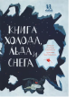

Что такое зима? Это снежинки, морозные узоры на окне, новогодние каникулы, санки, коньки, лыжи. А ещё зима - это целый материк, это арктические экспедиции, гонки на собачьих упряжках, полярная ночь и несколько ледниковых периодов. Эта книга - большой словарь зимы и всего зимнего. Здесь в алфавитном порядке собраны факты, истории, мифы и легенды о льде, холоде и снеге. Зима в этой книге показана через призму разных наук: от астрономии до философии и от биологии до истории. Всё, что мы любим в зиме, и всё, что поражает наше воображение, тайны природы и опасные приключения прошлого, законы физики и фантастические сказки - всё это собрано здесь, под одной обложкой.